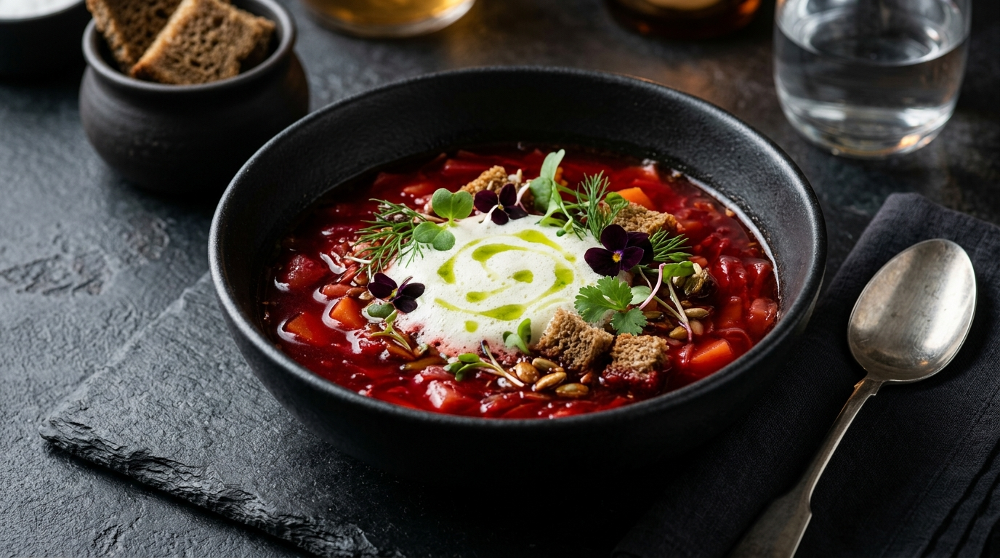
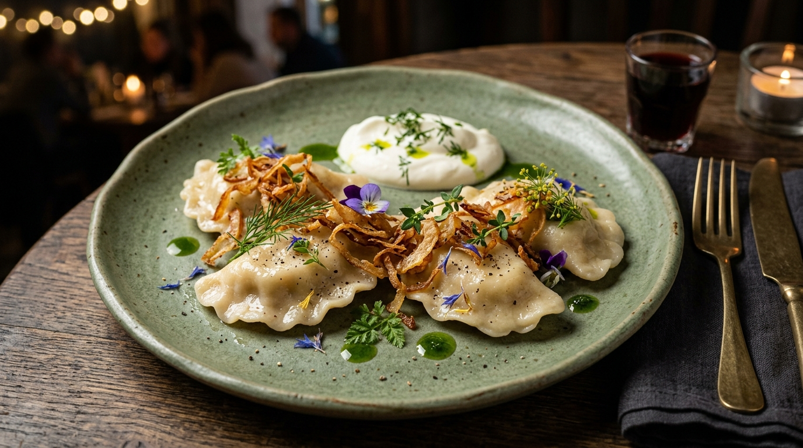
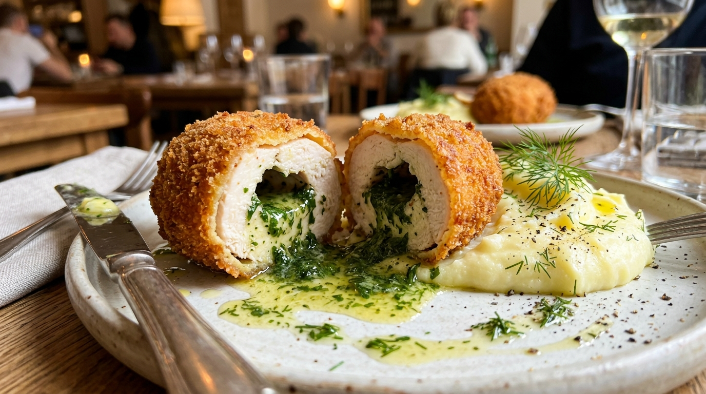

Ласкаво просимо до нашого закладу! Ми готуємо традиційні українські страви з локальних свіжих продуктів у сучасній подачі.

Ми поєднуємо автентичний смак страв із сучасним інтер'єром та європейським сервісом.
Співпрацюємо з локальними фермерами. Отримуємо свіжу м'яту, зелень, сири та м'ясо щоранку.
Знайомий з дитинства смак борщу та вареників у новому естетичному оформленні від шефа.
Щодня випікаємо свіжий житній хліб на натуральній заквасці без штучних домішок.
Спробуйте наші фірмові страви, які найбільше полюбляють гості.
Подається зі свіжою сметаною, зеленою кроповою олією та пампушками.

Тонке домашнє тісто, начинка з білих грибів, смажена золотиста цибуля.

Ніжне куряче філе з ароматним зеленим маслом та картопляним пюре.
Наш інтер'єр оформлений у світлих тонах із використанням натурального дерева та живої зелені. Тут приємно провести як діловий обід, так і затишну сімейну вечерю.
Адреса: м. Київ, вул. Велика Васильківська, 42
Графік роботи: Щодня з 09:00 до 22:00